Answering questions about a 3D scene is not the same as acting in one.
108 LEGO and mechanical-puzzle tasks. No coordinates are given: the model reads rulers, moves its own camera, acts turn by turn, and recovers from its own collisions.
Chenglong Shi*‡, Zekai Yuan*‡, Yue Song‡, Jon Pu†, Will Wu†Tencent HY
*Equal contribution · †Corresponding authors · ‡Work done during an internship at Tencent HY
No coordinates, no map — only a camera. GPT-6 Astra spends its first fifteen turns moving that camera down the corridor, overhead and from the side, reading each wall's openings off the cube grid. Every blue dot is a viewpoint it chose.
Turns 16–18 · Wall one
Turn, turn, slide.
Once it knows the shape, it centres the payload, turns it 180° about Z and 90° about X to match the first wall's zigzag opening, and slides 14 studs straight through.
Turns 19–64 · The hidden wall
46 turns hunting for a view.
The second wall's opening hides behind the first. The model pushes its camera into the gap, ends up inside walls more than once, and finally walks the viewpoint to the far end of the corridor to look back. The payload moves once.
Turn 65 · The only collision
Half a degree, then stop.
It tries a 180° turn too close to the brown wall. The turn is blocked after 0.5°, execution stops at the first failure and its three queued actions are skipped. It undoes the half degree, backs up two studs and turns in open space.
Turns 69–71 · Through
Two walls in three turns.
Through the brown wall, one look at the blue one, then a single four-action reply — rise, turn, turn, slide 12 studs — lands it in the goal. 17 moves against a 14-move optimum: the effort went into looking.
Same instance · 10 models
Two made it through.
Nine other models, same task, same 100 turns. Claude Opus 5.5 also made it through; the other 8 stopped at the walls (the closest got 39% of the way along the corridor). The failed runs collided 8–42 times; GPT-6 Astra collided once.
GPT-6 AstraM1 · Shape Through Walls · L5
TURN000/ 100
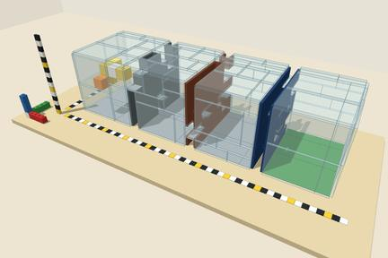
What the model sawstart
0looks
0moves
0collisions
startgoal
camera onlymove / turncollisiongoal
M1-L5 · same instance · corridor progresscollisions
All 10 models finished.
How it works
Four design principles.
Every task runs the same closed loop: the model sees rendered images and a few lines of feedback, replies with a batch of actions, and the environment executes them with real geometry. The paper's agent framework, SAPA, holds every model to exactly the same information.
what the model saw · M1 · turn 000
01
Active 3D grounding
Read rulers. Move the camera.
No object coordinates ever appear in text. The scene carries tri-color rulers, projection walls and display boards, and within a 100-turn budget the model calls camera(az, el, zoom, pan) itself to see past occlusion. On M1, GPT-6 Astra looked 69 times and moved 17.
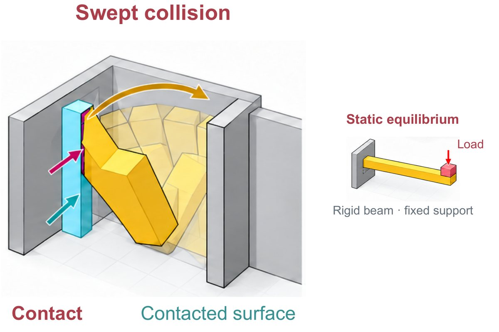
conceptual · paper Fig. 2
02
Physics-constrained action
Check the full motion path.
Every action is swept in substeps of at most 0.05 stud or 0.5°, with no motion planner to help. Collisions and topology are checked along the whole path, and structures by a rigid-body equilibrium solver calibrated against StableLego, which agrees with a Gurobi reference on 99.85% of cases.
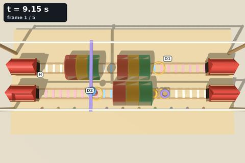
03
Controlled-time dynamics
Think paused. Act in time.
The world clock is frozen while the model thinks and advances only with timed physical actions, so API latency never matters. Dynamic tasks return five frames from the same viewpoint, 0.25 s apart, and speeds, angular velocities and periods must be read from them. Here, D3's train leaving its tunnel.
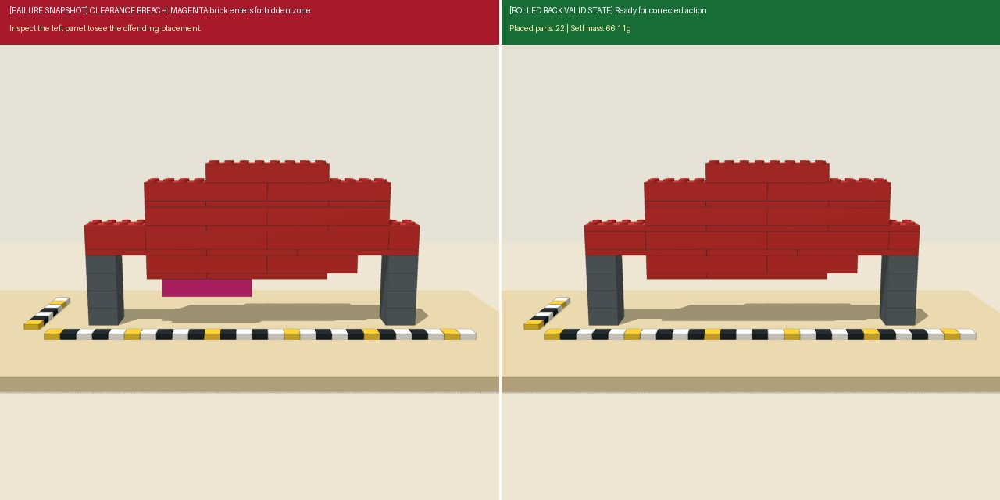
04
Controlled failure diagnosis
Use feedback. Isolate bottlenecks.
The first violation in a batch stops execution and skips the rest; the next image is a 1280×640 split screen, with the offending part in magenta and the obstacle in bright blue on the left, and the restored valid state on the right. Separate diagnostic runs then replace one capability with ground truth or take it away: a reference plan (+plan), the exact 3D state (+state), no images (blind) or a locked camera (no-camera).
Pictured: GPT-6 Astra on B1, turn 39, a brick pushed into the clearance zone under the bridge is rolled back.
One turn of SAPA
One call per turn, three stages.
A
Observe and remember
A rendered image with rulers, or a 5-frame strobe strip; the goal, the physical rules and the turn counter; the task's tools; the last 10 text turns and the last 2 images, plus a persistent note the model rewrites itself.
B
Reason and call tools
The model replies with one JSON object: a rationale, a new note and 1–5 tool calls. Grounding, timing, reflecting on the last rollback and planning all happen in that single call.
{"reason": "…", "note": "…", "actions": [ … ]}
C
Execute and feed back
The calls run in order as swept motions; the first violation truncates the batch and returns the split-screen rollback, and every call's result is reported in text. Batching cuts model calls by 23%–60% (median 50%).
ScoringSolved episodes score 40–100 and lose points for surplus actions, collisions and turns; unsolved episodes score 0–35 by the furthest progress reached. Builds that end in a load test (B1–B3) count pass or fail only.
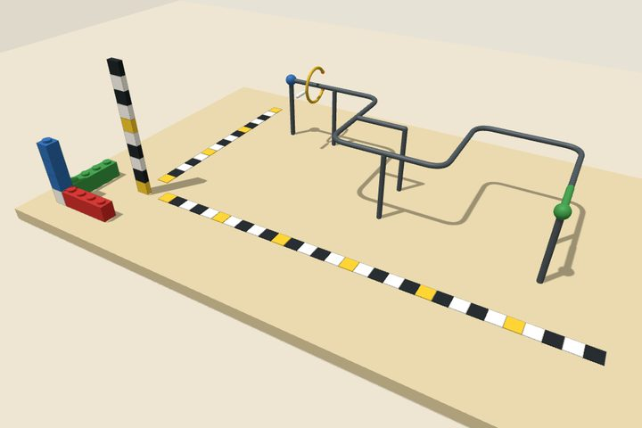
Level 5 feedbackturned +0.5 of +180.0 deg about y before the contactLevel 7 feedbackstopped early by the contactGPT-6 Astra's one collision on M1, as each level reports it
Difficulty
Level 7 takes the cues away.
Parameterized families are graded along their own axes: L1 has one or two constraints with generous margins, L3 couples several and adds decoys, L5 tightens tolerances and adds chiral decoys, oblique projections or multi-branch timing. L7 keeps the L5 task and adds perception and coordinate-frame levers. Below, the M3 C-ring at level 5 with one lever at a time; the number is how far that lever moved the top three models' mean score (paper Table C.1):
The level-5 instance as generated.
Why SpaceAct
Acting, not answering.
Most spatial benchmarks ask a model questions about a picture. Interactive ones let it act, but usually hand it object coordinates, plan its motions for it, and pause the world between moves. SpaceAct takes those shortcuts away.
From Table 1 of the paper. ○ partial: only in selected tiers, or with discrete collision checks.
Also
Hardest tier only.
All 108 instances come from each family's hardest available tier (L5, or L7 where it exists), three per family; 44 of them form the main evaluation matrix.
Also
Every instance is solvable.
Discrete puzzles are solved optimally by BFS, Dijkstra or exact cover; continuous and construction tasks are verified by replaying scripted reference solutions or by their load checkers. Generators also reject instances with known shortcuts.
Also
A score with headroom.
The tiered score charges for surplus actions, collisions and turns, so even the strongest model, Claude Opus 5.5, averages 79.1 and the top of the benchmark has room to spare.
Replays
One from each of the six categories.
Each is a real episode, re-executed action by action in the benchmark's own environment. Click one to watch it unfold, with the other models' results on the same instance at the end. The last is the paper's case study: one instance, two models.
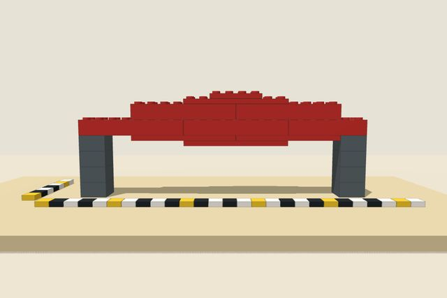
▶ Watch the replay
Construction & Mechanics
Ten bridges, one chasm.
Claude Opus 5.5 spans 18 studs with ten bricks: 33 g that hold 2,304 g. Six of the ten models passed the 1,800 g load test.
Claude Opus 5.5 · 10 parts · 2,304 g
Construction & Mechanics · B1 Chasm Bridge
Ten bricks, 2.3 kilograms.
Bridge an 18-stud chasm between two slender 2×2 piers; every placement is checked for self-weight collapse, and the finished bridge faces a three-zone moving load it must survive at 1,800 g. Claude Opus 5.5 submits a ten-brick, 33 g bridge that holds 2,304 g on turn 51, then spends its last 49 turns failing to beat it. The finale lines up every model's scored bridge.
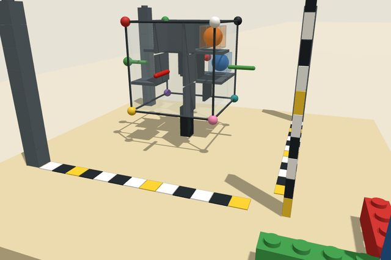
▶ Watch the replay
Planning & Puzzles
Turn the world, not the ball.
Quarter-turn a closed 3×3×3 maze until both balls settle in their cells. The only solve in 16 finished runs.
GPT-6 Astra · 59 turns · 0 collisions
Planning & Puzzles · P4 3D Gravity Maze · L3
Turn the world, not the ball.
Rotate a closed 3×3×3 maze a quarter turn at a time until both balls rest in their cells; after every turn they fall until they stop. Of the 16 finished runs on P4 mazes, this is the only one that reached the goal: GPT-6 Astra, in 59 turns.
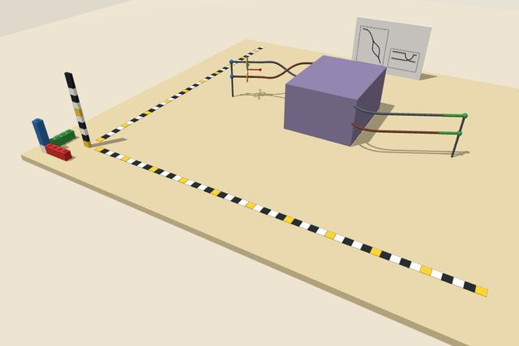
▶ Watch the replay
6-DoF Manipulation
Roll with the braid.
Two rings welded together, each threaded on one of two braided wires; the middle hides in a tunnel and the course sits off the grid. Claude Opus 5.5 gets them through in 22 turns with one collision.
Claude Opus 5.5 · 22 turns · 1 collision
6-DoF Manipulation · M4 Twin Rings · L7
Roll with the braid.
Two rings joined like spectacles ride on two braided wires: the pair has to roll as the wires twist and turn through every bend. Level 7 turns the course off the stud grid, hides its middle in an opaque tunnel with only a half-scale drawing behind the board, and takes moves in the payload's own axes. Claude Opus 5.5 reads the drawing, looks 14 times and gets through in 22 turns with one collision; of the nine other models only Gemini 4 Argon also makes it, in 81 turns with 50 collisions.
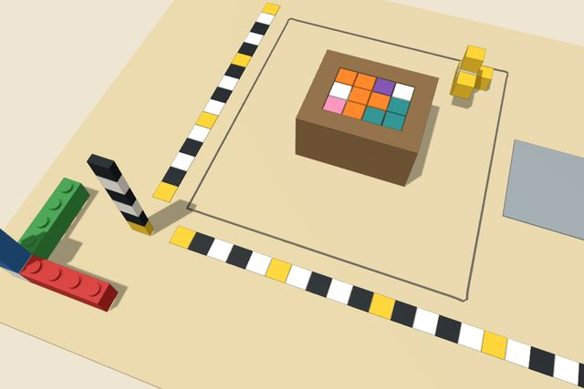
▶ Watch the replay
Assembly & Packing
Fill a box you can't see into.
Seven pieces of unknown shape, a 4×3×3 box with opaque walls. Filled in 65 turns with one collision, the only one of ten models to do it.
GPT-6 Astra · 65 turns · 1 collision
Assembly & Packing · A3 Box Packing · L5
Fill a box you can't see into.
Fill a 4×3×3 wooden box with cube pieces whose shapes are never described: pick each by its white cube, turn it, drop it in from above, and leave the mirror-image decoys out. GPT-6 Astra fills it in 65 turns with one collision, the only solve among the ten models; Kimi K3 and MiMo V2.6 Pro stall at 17% and 33%.
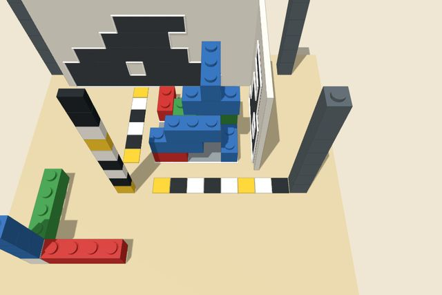
▶ Watch the replay
Multi-View Perception
Build the shadow, not the shape.
Two walls, one slanting light, three outlines to fill. Eleven bricks in three replies.
Claude Opus 5.5 · 6 turns · 0 collisions
Multi-View Perception · V1 Shadow Build · L5
Build the shadow, not the shape.
Stack bricks so a slanting light casts exactly the outlined shadows on two walls while the footprint fills a third outline. Claude Opus 5.5 looks three times, then builds it in three replies with all eleven bricks. Gemini 4 Argon spends 98 turns and stops at 92%.
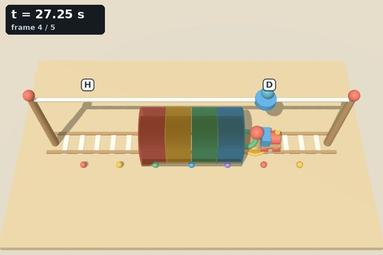
▶ Watch the replay
Dynamics & Mechanisms
Clock it, then drop.
A train changes speed inside a tunnel and nobody says how. Time the cup from the strobe frames, then drop on the next lap.
GPT-6 Astra · 10 turns · one ball, one catch
Dynamics & Mechanisms · D3 Tunnel Ball Drop · L7
Clock it, then drop.
The world freezes while the model thinks; every reply comes back as a 5-frame strobe. At level 7 the tunnel speeds are no longer reported. GPT-6 Astra times the green cup crossing its marker at about 10.71 s, judges that dropping now would be late, waits out the train's next lap and releases as the cup leaves the tunnel about a second from the marker: one ball, one catch, 10 turns. Five of the ten models made the catch.
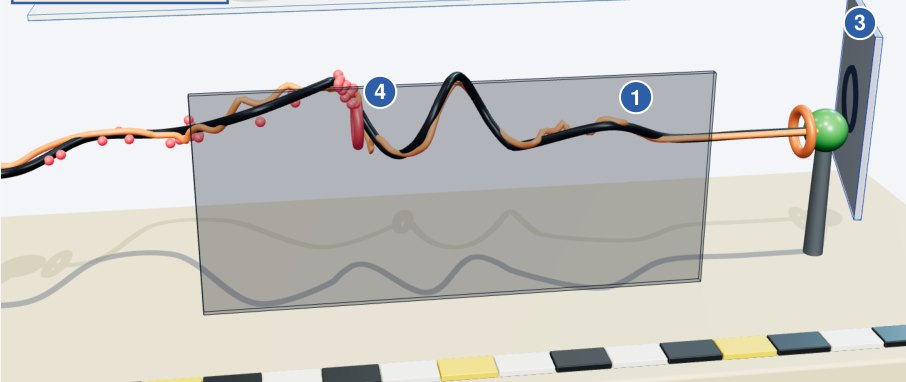
▶ Watch both runs
Case study · one instance, two models
Same strategy, different grounding.
A ring must follow a wire hidden behind a screen, whose course shows only in an overhead shadow window, a mirror turned on its side, and every collision. Both models treat each blocked move as a probe of the wire. Claude Opus 5.5 fits the contacts into one consistent 3D hypothesis and solves it in 34 turns; Qwen 3.8 Max inverts the contact rule, reads the overhead slope backwards, and stalls at 46% after 93 collisions.
Claude Opus 5.5 vs Qwen 3.8 Max · switch runs inside the replay
Dynamics & Mechanisms · D7 Mirror Wire · L5
Same strategy, different grounding.
The wire runs behind a screen (drawn as glass here); its course shows only in an overhead shadow window, a mirror on its side, and every collision. Claude Opus 5.5 fits the contacts into a geometric hypothesis, “Two helix fits match every block and safe point so far”, and solves it in 34 turns with 15 collisions. Qwen 3.8 Max follows the same scheme but keeps grounding it wrongly, “I had the touch rule inverted”, “My xy slope was backwards”, and stalls at 46% after 93 collisions. Switch runs at the top left; red dots mark where the ring touched the wire.
Results
Main results.
Ten frontier MLLMs on the same 44-instance main matrix (one run per model and instance, seed 100), up to 100 turns and 5 actions per turn. Score is the tiered score averaged over the 41 graded instances, SR is the success rate over all 44, and each category column is the within-category success rate. Numbers from Table 3 of the paper.
What limits models
Grounding, not planning.
Each diagnostic reruns the same L5 instances with one capability replaced by ground truth or taken away. +plan adds a reference high-level plan (turns and regions; distances are left to the model); +state adds the plan, the coarse layout and the exact 3D pose of the payload every turn. Every comparison is paired with the same model's main-matrix episode on the same instance.
Findings
What the runs show.
Three patterns from the paper's analysis of every main-matrix trajectory, each linked to a replay where you can watch it happen.
scroll or drag the timeline to scrub · ← → step a turn · esc closes